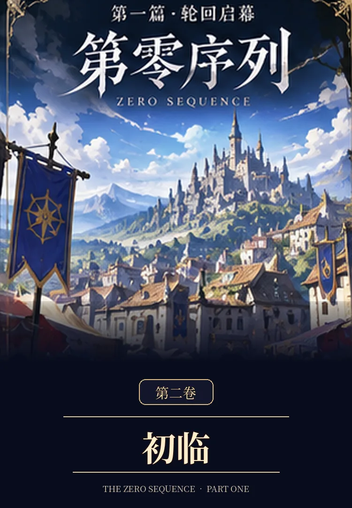
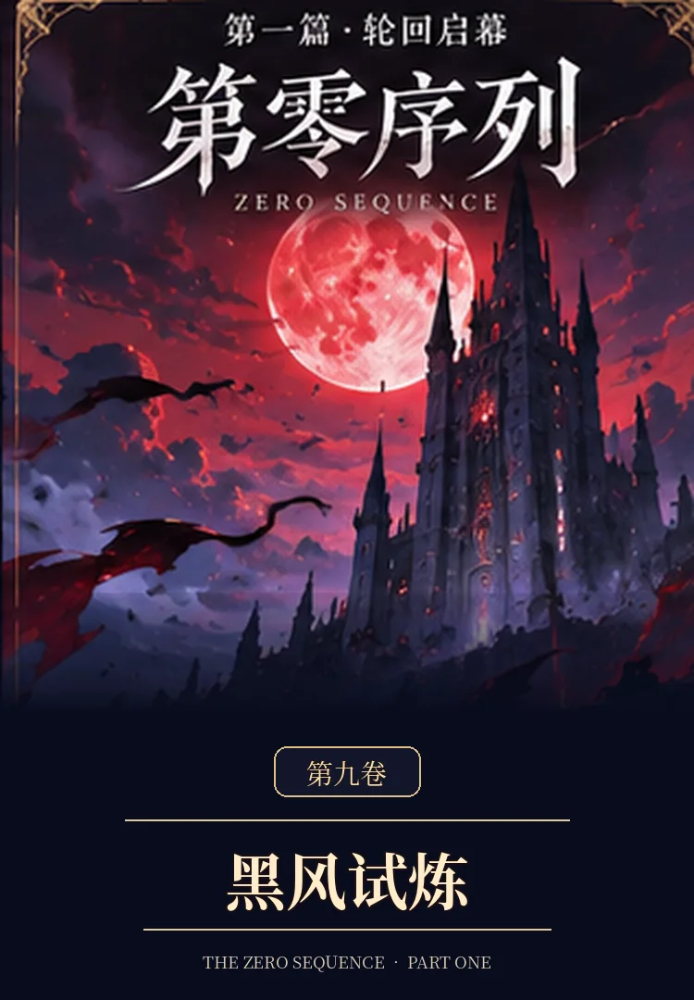
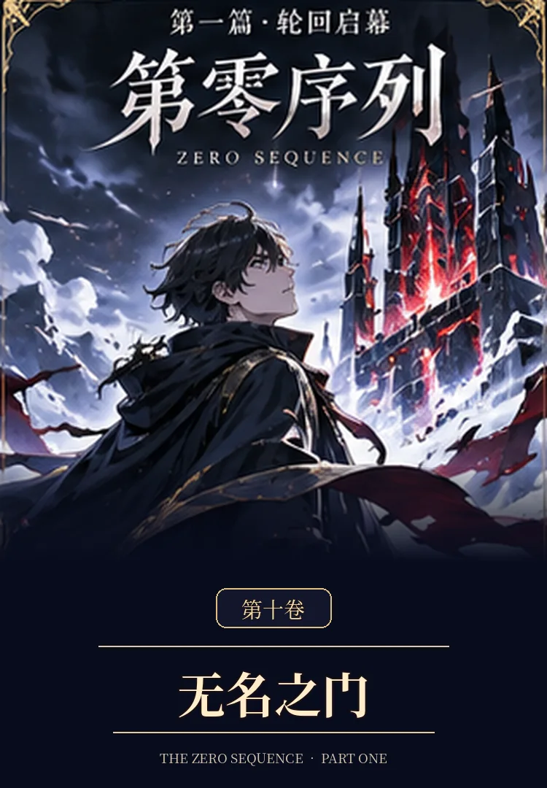

首页 / 第一篇
PART ONE · VOLUMES 01—10
第一篇
轮回启幕
一场重生，打开《神魔轮回》的序幕。顾长渊与伙伴们从晨星镇走向维兰德、灰石商路、白霜边境与黑风峡谷；当七处旧影、失落道路和无名之门逐渐浮现，他们发现，真正需要守护的不只是攻略中的胜负，还有活在世界里的人。

第一篇 · 十卷目录
统一竖版封面与阅读状态：未解锁的卷隐藏故事简介，但所有已发布章节仍可自由进入阅读。
读取本篇进度… 第一篇 · 第01卷
第一篇 · 第01卷第一卷《重返》
从死亡重返起点，直到封测结束，他终于确认：那不是一个等待玩家攻略的游戏，而是一个真实存在的世界。

第一篇 · 第02卷第二卷《初临》
全球正式开服。晨星镇没有重置，NPC仍记得他们，而顾长渊也开始明白：记忆只能提供方向，不能命令未来。
 第一篇 · 第03卷
第一篇 · 第03卷第三卷《暗流》
进入维兰德城后，玩家势力、交易、灰鸦、白烛与历史缺失区域同时浮现。古言澈与银月加入，暗流开始真正汇聚。
 第一篇 · 第04卷
第一篇 · 第04卷第四卷《无声之城》
无声的钟、北线第三路碑与失踪者。银月在没有命令时作出了守护选择。
 第一篇 · 第05卷
第一篇 · 第05卷第五卷《灰石盟约》
矿道、工匠、白塔与界碑师共同守住灰石运输线；盟约不是个人奖赏。
 第一篇 · 第06卷
第一篇 · 第06卷第六卷《失落商道》
失落的西境商路。星轨术士、镜界行者与独立护送队各有自己的道路。
 第一篇 · 第07卷
第一篇 · 第07卷第七卷《白霜边境》
提前到来的寒潮，普通守卫与契兽师守住霜栖镇，付出真实的代价。
 第一篇 · 第08卷
第一篇 · 第08卷第八卷《百城之约》
百城商路会议，跨城经济、遗物交易、失踪仓库与势力之间的选择。

第一篇 · 第09卷第九卷《黑风试炼》
黑风峡谷遭遇真实败退。无法无伤通关的战斗与必须记住的人。

10 — COMPLETE第十卷《无名之门》
旧城无名之门，第七码留下局部答案。故事在更大的世界里继续。
篇章编排规则：以后每十卷组成一篇。第一篇收录第1—10卷，第二篇《百城星火》已收录第11—20卷，第三篇收录第21—30卷，以此类推。新篇未完成前不提前标注“已完结”。这只是书目分篇，故事会持续展开。